DALE CARNEGIE · HOW TO WIN FRIENDS · PART ONE · CHAPTER 3 · PDF p51–66
"He Who Can Do This Has the Whole World with Him. He Who Cannot Walks a Lonely Way"
Nobody cares much about what you want. Everyone cares about what they want. To move someone, start from their want and show them how your request gets them there.
Carnegie opens with fishing: he loves strawberries and cream, but he baits the hook with worms, because that is what the fish want. People are the same. Talking about your own wishes ("I want you to…", "our company desires…") is natural and almost useless, because the listener is busy with their own problems. The chapter's long run of stories, from a calf that would not enter a barn to a hotel that tried to triple Carnegie's rent, a job hunter writing to twelve banks and a small boy who would not eat, all make one move: find what the other person already wants, and connect your request to it. Carnegie insists this is not a trick to get something at the other person's cost; in every good example both sides come out ahead. The title is not his own line: it is the end of a sentence by the psychologist Harry Overstreet, which the chapter repeats three times.
Principle 3 of Part One
Arouse in the other person an eager want.
How the chapter fits together
pdf p51 · read this first
Where it sits. This is the third and last chapter of Part One, "Fundamental Techniques in Handling People". Ch.1 said what to stop doing (criticizing, condemning, complaining). Ch.2 named the hunger underneath almost everything people do, the desire to feel important, and said feed it with honest appreciation. This chapter takes the next step: if people act only from their own wants, then the way to get anything done with them is to start from those wants. The chapter ends with the Part One "In a Nutshell" list (plate 15). Part Two, "Six Ways to Make People Like You", begins at pdf p67 with Ch.4.
The argument as a chain. Each row builds on the one before it.
Problemwe ask by talking about what we want→nobody else is interested in that
Whyevery act springs from a want (Red Cross gift too)→Overstreet: first arouse an eager want
Small proofsworms, not strawberriesEmerson's calfAndrew Carnegie's nephewsTim and kindergarten
The habitpause before you ask:→"how can I make them want to do it?"
In businesshotel ballroom (300% → 50%)Ford: see their anglethe self-centred agency letterfreight letter, before and afterAnderson: 11 of 12 banks
Sellingpeople buy, they hate being soldForest Hills agentCarl vs John
Guard-railnot manipulation→both sides must gainWhidden's Shell station
At homebasketball pitchbully on the tricyclethe bed he boughtthe cereal she made→let them stir the idea themselves
PrinciplePrinciple 3: arouse in the other person an eager want→Part One In a Nutshell
01 · THE OPENING IMAGE
Bait the hook to suit the fish
pdf p51
The fishing story. Carnegie spent summers fishing in Maine. He himself is very fond of strawberries and cream, but fish, oddly enough, prefer worms. So he never baited the hook with what he liked. He hung a worm or a grasshopper in front of the fish, as if to say "wouldn't you like this?" His question to the reader: why not use the same plain sense when "fishing" for people?
Lloyd George. David Lloyd George was Britain's Prime Minister in the First World War. The other wartime leaders, Woodrow Wilson (USA), Vittorio Orlando (Italy) and Georges Clemenceau (France), had faded from power and memory, yet he was still on top. Asked how, he said that if any one thing explained it, it was that he had learned to bait the hook to suit the fish.
The blunt claim. Talking about what we want is, in Carnegie's words, childish. Of course you are interested in what you want; you always will be. But nobody else is. Everyone else is exactly like you: interested in what they want. So:
"talk about what they want and show them how to get it"Carnegie, on the only way to influence people (pdf p51)
That sentence has two halves, and both matter: talk about what they want, and show them how to get it. Naming their want is not enough; you have to connect it to the thing you are asking for.
First everyday example. If you do not want your children to smoke, do not preach and do not talk about what you want. Show them that cigarettes may cost them a place on the basketball team or the hundred-yard race. Your goal (no smoking) rides on their goal (making the team).
Picture it
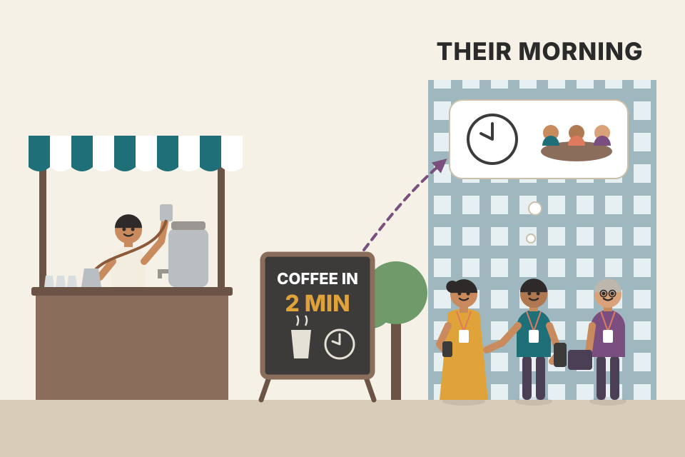
A chai-stall owner near a Bengaluru tech park does not stand outside shouting "I need customers, I have rent to pay". He puts out a board: "Filter coffee in 2 minutes, before your 10 a.m. stand-up". Office workers in a hurry read it and stop, because the board talks about their morning, not his rent.
Where it breaks: a fish has one simple want and no idea it is being lured. People have many wants at once, and they notice when the "bait" is fake. The board only works if the coffee really is ready in two minutes.
What's happening behind it
The book's explanation: every person is fully absorbed in their own wants, all the time. A request framed around your want asks them to switch attention to something they do not care about; a request framed around their want lands in the place their attention already is.
Beyond the book: marketers call the same idea "features versus benefits" (a drill's 800-watt motor is a feature; the neat hole in the wall is the benefit the buyer wants). Psychologists add that people judge requests partly by "what's in it for me", and that a reason, any reason that fits their goals, raises the chance of a yes.
At work
"I need someone to review my PR today" is strawberries and cream. "This PR removes the flaky retry that paged you twice last week; ten minutes of review and it's gone" is a worm. Same request; the second one is about the reviewer's pager.
With your manager: "I'd like to work on the search rewrite" is your want. "The search rewrite would cut the p95 that's on your quarterly goals, and I've already prototyped the slow part" is theirs.
Interview angle. "Why do you want to join us?" Most answers talk about what the candidate wants (growth, learning, a bigger brand). Strong answers bait the hook: "You're scaling the payments platform; I've spent two years on exactly that problem, here is what I'd bring."
Connects to
Ford's version of the same idea, "see things from the other person's angle": plate 7 and Part Three, Ch.8.
Talking in terms of the other person's interests: Part Two, Ch.5.
02 · PUSHING VS LEADING
Emerson's calf and the housemaid who knew better
pdf p51–52
Carnegie says the rule works whether you are dealing with children, calves or chimpanzees, and tells a story about one of America's most famous thinkers losing a contest of wills to a young cow.
Ralph Waldo Emersonhis sonone stubborn calfthe family's Irish housemaid
The situation. Emerson, the essayist and philosopher, and his son wanted to get a calf into the barn.
What they did. They thought only of what they wanted. Emerson pushed from behind, his son pulled from the front.
What the calf did. Exactly the same thing: it thought only of what it wanted. It stiffened its legs and refused to leave the pasture.
The move. The housemaid had never written an essay, but here she had more practical sense than Emerson. She thought about what the calf wanted. She put a finger in its mouth like a mother's teat, and while it sucked, she led it gently into the barn.
The point: force met force. The calf was not being difficult; it was doing what Emerson was doing, putting its own want first. The housemaid did not out-push it; she offered it something it wanted and walked it where she wanted it to go.
Dated wording. The book calls her "the Irish housemaid" and praises her "horse sense" as if it were surprising in a servant. The modern reading: practical know-how often beats book learning, and it often sits with the person nobody thought to ask.
Picture it
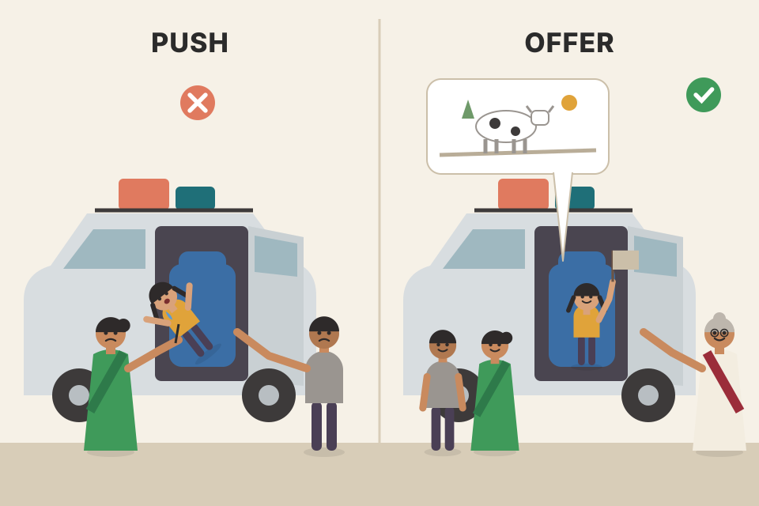
Getting a toddler into the car seat for a family trip to Tirupati. Dad pushes, Mum pulls the straps, the child goes rigid and screams. Then Grandmother says "Who wants to hold the window-shade and be in charge of spotting cows?" and the child climbs in by herself.
Where it breaks: a calf only wants milk; a toddler can be bribed once or twice before she learns the trick. With people, the offer must be real and ongoing, or it turns into a lure they stop trusting.
What's happening behind it
From the book: pushing someone toward your goal makes them dig in, because now their want (stay put, keep control) is directly opposed to yours. Offering something they want changes the direction of the pull: they move toward the thing, and you go along.
Beyond the book: psychologists call the digging-in reaction reactance (Jack Brehm, 1966): when people feel their freedom is being taken away, they push to get it back, often by doing the opposite of what is demanded. Removing the push removes the reason to resist.
At work
A team refuses to move to the new deploy pipeline. You escalate, you set a deadline, you post reminders: Emerson pushing and his son pulling. The housemaid move is to find what they want (faster rollbacks, fewer manual steps on Friday nights) and let them try the new pipeline on exactly that pain. They walk into the barn themselves.
Pushing harder is Ch.1's criticism in physical form: Ch.1.
03 · THE THEORY
Every act springs from a want, even the generous ones
pdf p52
The claim. Every single thing you have done since birth, you did because you wanted something.
The hard case: charity. Carnegie tests the claim on the best-looking example he can find, a large donation to the Red Cross. Even that fits. You gave because you wanted to help, to do something fine and unselfish (he quotes the Bible's line about doing good "unto one of the least of these"). If you had not wanted that feeling more than you wanted the money, you would not have given. He also allows less noble reasons: maybe you were embarrassed to say no, or a customer asked you. Either way, the gift came from a want.
This is not cynicism. Carnegie is not saying generous people are secretly selfish; he is saying that even generosity has a motive, and the motive is something the giver wants (the good feeling, the self-image, avoiding awkwardness). Understanding that is what lets you work with people's motives instead of against them.
Overstreet's advice. Harry A. Overstreet, in his book Influencing Human Behavior, said that action grows out of what we fundamentally desire, and that the single best advice for anyone trying to persuade, in business, at home, at school or in politics, is this:
"First, arouse in the other person an eager want."Harry A. Overstreet, quoted by Carnegie (pdf p52)
Overstreet's next two sentences give the chapter its title: whoever can do this has the whole world on their side, and whoever cannot walks alone. Carnegie quotes the whole passage three times in the chapter (pdf p52, p64, p66).
"Eager"
Not a grudging yes. The aim is that they actually want the thing, so they act without being pushed or watched.
"First"
Before the facts, the argument, the request. If the want is not there, the best argument in the world lands on a listener who doesn't care.
Picture it
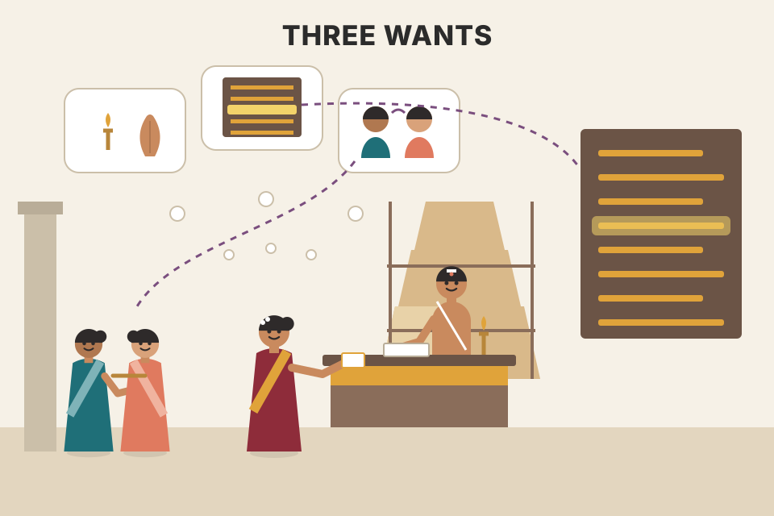
Your aunt donates generously to the temple renovation every year. She is genuinely devout. She also likes seeing her family's name on the donor board, and she would feel awkward if the neighbours gave and she did not. All three are real wants; none makes the gift fake.
Where it breaks: "every act springs from a want" can be stretched until it explains nothing ("he jumped in the river to save the child because he wanted to"). Carnegie uses it as a practical lens for persuasion, not as a full theory of human goodness.
What's happening behind it
From the book: desire is the engine of action. Logic can point the way, but only a want makes someone move, so the persuader's first job is to switch the engine on.
Beyond the book: the "everyone acts from self-interest" view is called psychological egoism, and philosophers have long argued about it. Research on altruism (for example C. Daniel Batson's work on empathy) suggests people sometimes help purely for the other person's sake. You do not need to settle that debate to use the chapter: whatever the deep motive, people respond to requests that connect with what they care about.
At work
Even the "selfless" work on your team has a want behind it. The engineer who volunteers for on-call cover may want to be seen as reliable, to learn the system, or to bank goodwill. The one who writes docs nobody asked for may want fewer interruptions. If you know the want, you can recognise it ("your runbook saved us 40 minutes last night") and ask for more of the same in its terms.
Connects to
The deepest want, the desire to feel important: Ch.2.
Appealing to the nobler motives people like to see in themselves: Part Three, Ch.10.
04 · THE FIVE-DOLLAR POSTSCRIPT
Andrew Carnegie and the nephews who never wrote home
pdf p52–53
Who he was. Andrew Carnegie, the steel magnate, was a poor Scottish boy who started work at two cents an hour and in the end gave away $365 million. He had only four years of school, but he learned early that the only way to influence people is to talk in terms of what they want.
Beyond the book: the two men were not related. Dale was born Carnagey and changed the spelling of his name in the early 1920s.
two nephews at Yalea $100 beta $5 postscriptreplies by return mail
The situation. His sister-in-law was sick with worry about her two sons at Yale. They were so wrapped up in their own lives that they never wrote home and ignored her anxious letters.
The bet. Andrew Carnegie offered to bet a hundred dollars that he could get a reply by return post without even asking for one. Someone took the bet.
The move. He wrote the boys a friendly, chatty letter and added, almost in passing in a postscript, that he was sending each of them five dollars. He did not put the money in.
The result. Both boys wrote back at once to thank "Dear Uncle Andrew" for his kind letter and, Carnegie lets the reader finish the sentence, to mention that the money was missing.
The point: their mother's letters talked about her want (please write). Uncle Andrew's letter touched their want (five dollars), so the reply he wanted came as a side effect.
Picture it
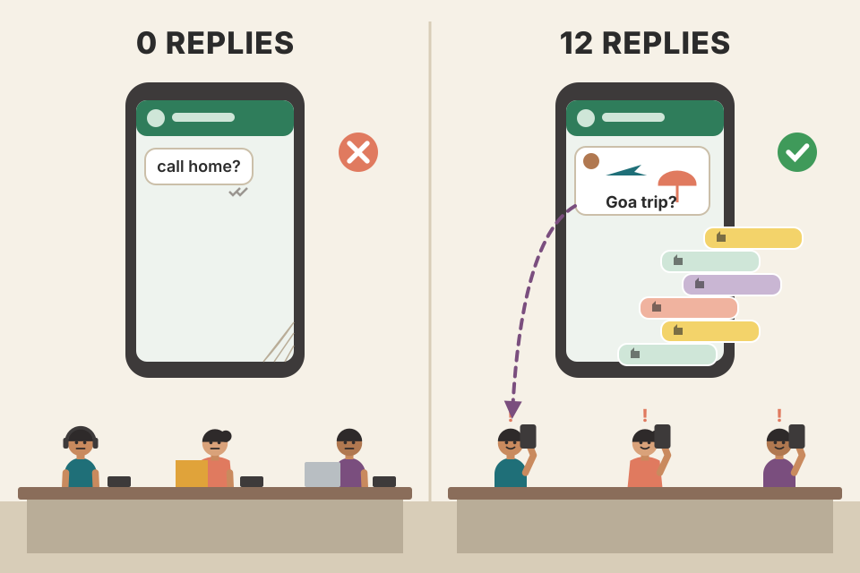
A family WhatsApp group where the cousins in hostels never reply to "beta, call home sometimes". Then an uncle posts: "Planning a Diwali trip to Goa, kids' tickets on me. Who's in?" Twelve replies in five minutes, from people who have not typed a word in months.
Where it breaks: Carnegie's trick only worked because it was a one-off joke and he was family. Promising money and not sending it is a deception; done in earnest, or done twice, it destroys trust. Take the insight (speak to their want), not the method (a false promise).
What's happening behind it
From the book: the boys were not cruel, just busy with their own concerns, exactly like the reader in plate 1. A request phrased around the mother's need competed with everything else on their minds and lost. A message that touched their own interest jumped the queue.
At work
The "nobody answers my message" problem is common. You post "Can someone please fill in the on-call survey?" three times. Responses: two. Rephrase so it touches what they want: "The survey decides whether we get a second on-call person next quarter. If you want fewer night pages, two minutes here." The honest version of the five-dollar postscript is to name the real benefit to them, not a fake one.
Connects to
Andrew Carnegie appears again in Part Two using people's love of their own names: Part Two, Ch.3.
05 · A FAMILY CASE
Tim, kindergarten, and the finger paints on the kitchen table
pdf p53
Stan NovakCleveland, Ohiocourse participantson Tim, starting kindergarten tomorrow
The situation. Stan came home one evening to find his youngest son, Tim, kicking and screaming on the living-room floor. Kindergarten started the next day and Tim was refusing to go.
The usual move he skipped. Normally Stan would have sent Tim to his room and told him he was going, and that was that. But he saw this would not get Tim to kindergarten in a good frame of mind. So he asked himself: if I were Tim, why would I be excited to go?
The move. He and his wife, Lil, listed the fun things Tim would do there: finger painting, singing, making new friends. Then they acted on it. Stan, Lil and their other son, Bob, started finger painting together at the kitchen table, obviously enjoying themselves. Soon Tim was peeking round the corner, then begging to join. "Oh no," they told him, "you have to go to kindergarten first to learn how." Then Stan went through the list with as much enthusiasm as he could, in words a small boy would understand.
The result. Next morning Stan came downstairs early and found Tim asleep in the living-room chair. Tim explained he was waiting to go to kindergarten so he would not be late.
Carnegie's lesson, and the habit to build. The family's enthusiasm created in Tim an eager want that no amount of arguing or threats could have produced. So, the next time you need to persuade someone, pause before you speak and ask yourself:
The pause question
"How can I make this person want to do it?"
Carnegie says that one question stops us from charging into a conversation with useless talk about our own wishes.
Picture it
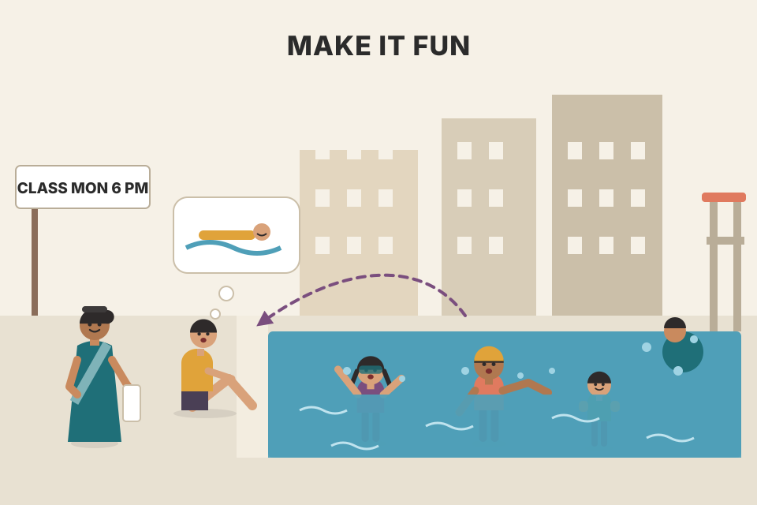
A child who refuses to start swimming lessons. Instead of a lecture, the cousins spend Sunday splashing and racing in the society pool, laughing loudly, while the child watches from the edge. "Can I come in?" "Only once you've learned to float, that's what the lessons are for." By Monday the child is asking when the class starts.
Where it breaks: Tim's fears were small and his parents could show him the fun. If a child is afraid for a real reason (a bully in the class, a bad teacher), enthusiasm only papers over it. Ask first; make it attractive second.
What's happening behind it
From the book: the order "you will go" would have met Tim's want (stay home) head-on. The family changed Tim's want instead: kindergarten became the door to something he could see and wanted badly.
Beyond the book: two well-studied effects are visible here. Social proof: seeing people you trust enjoy something makes you want it. Scarcity: being told "not yet, first you have to…" makes a thing more desirable (Robert Cialdini describes both in Influence).
At work
A new hire dreads their first on-call rotation. "It's part of the job" is Stan's usual move. The Novak move: shadow them on a real incident where the senior engineer is clearly enjoying the hunt, point out what they will learn about the system that nobody else gets to see, and frame the first solo shift as a milestone. Same rotation; very different first night.
Interview angle. "How do you motivate a reluctant team member?" Describe asking what would make it attractive to them, then showing it, rather than restating that it has to be done.
Worked example: the same evening, two ways
My want
"Stop crying. You're going tomorrow whether you like it or not. Go to your room."
Tim goes, but goes upset; the first day starts as a fight.
His want
"Look what we're doing! Finger paints! Oh, you can't yet, that's what kindergarten teaches you. And there are songs, and new friends…"
The longest story in the chapter is Carnegie's own, and it is the clearest model of the principle in a business negotiation.
a New York hotelgrand ballroom, 20 nights a seasonrent ~3× overnighttickets already printed
The situation. Every season Carnegie rented a hotel's grand ballroom in New York for twenty nights of lectures. At the start of one season he was told, with no warning, that the rent would be nearly three times the old price. The news came after the tickets were printed and sold and every announcement had gone out, so he could hardly walk away.
His thinking. He did not want to pay. But he saw no point telling the hotel what he wanted; the hotel cared only about what it wanted. A couple of days later he went to see the manager.
The opening. He said he had been a little shocked by the letter but did not blame the manager at all: in his place he would probably have written the same thing. A hotel manager's job is to make all the profit he can, and a manager who fails to should be fired. Then he suggested they write down, together, the advantages and disadvantages to the manager of insisting on the increase.
The sheet. He took a sheet of hotel letterhead, drew a line down the middle, and headed the columns "Advantages" and "Disadvantages". He filled them in out loud, entirely from the hotel's side (see the sheet below).
The close. He handed the sheet over and asked the manager to weigh both columns carefully and then give his final answer.
The result. A letter arrived the next day: the rent would go up 50 percent instead of 300 percent.
Advantages (to the hotel)
Ballroom free. Without the lectures, the room is open for dances and conventions, which pay far more than a lecture series. Twenty nights of lectures block some very profitable bookings.
Disadvantages (to the hotel)
Income from Carnegie falls to zero, not up: he cannot pay that much, so he will take the lectures elsewhere.
Lost free advertising. The lectures bring crowds of educated, well-off people into the hotel. Even $5,000 of newspaper ads could not bring in as many people to look at the place.
Notice the honesty of the sheet: Carnegie put the hotel's real gain (a free ballroom) first, and did not hide it. That is what made the disadvantages believable.
Step through the negotiation
The road not taken. Carnegie stresses that he got the reduction without saying one word about what he wanted; he talked the whole time about what the manager wanted and how to get it. Then he imagines the "human, natural" alternative: storming in to protest that the tickets are printed, three hundred percent is ridiculous, he refuses to pay. An argument would have started to boil, and arguments end badly. Even if he had proved the manager wrong, the manager's pride would have made it hard to back down.
Picture it
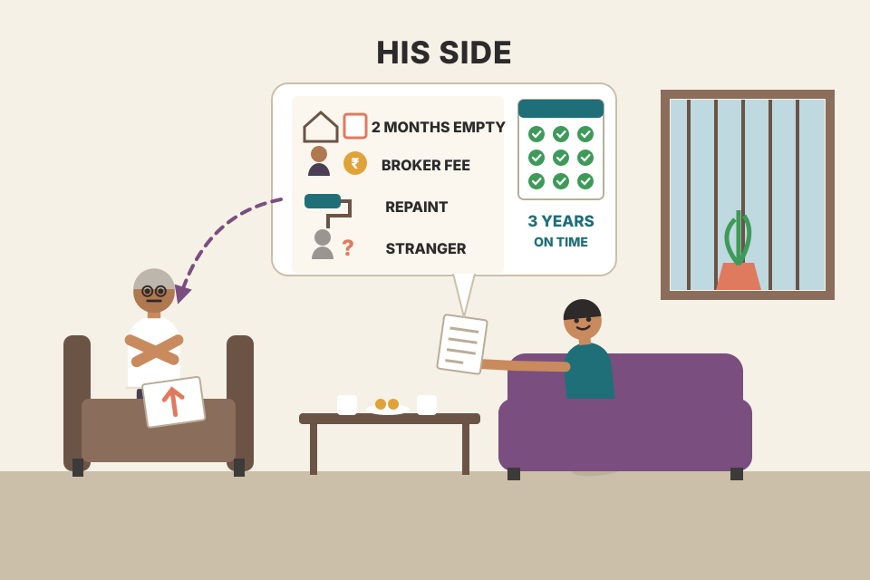
Your landlord in Pune announces a 40% rent hike at renewal. You could argue about fairness. Or you could sit down with him and list his side honestly: yes, a new tenant might pay more; but the flat will sit empty for a month or two, he will pay a broker a month's rent, repaint, and take a chance on a stranger, while you have paid on time for three years and never called him about a leaking tap. Many landlords settle at 10%.
Where it breaks: the method only works if the costs to them are real. If the market has truly moved and there is a queue of tenants, his "disadvantages" column is short, and no framing will change that. Carnegie's sheet worked because his facts were true.
What's happening behind it
From the book: by agreeing that the manager was right to chase profit, Carnegie took away any reason for the manager to defend himself. By writing the case in the manager's own terms (profit), he made accepting it look like doing his job well rather than losing an argument. Pride never entered it.
Beyond the book: negotiation research calls this moving from positions ("300%" vs "no increase") to interests (filling the ballroom profitably). Fisher and Ury's Getting to Yes (1981) builds a whole method on it. Carnegie also quietly showed his BATNA (best alternative to a negotiated agreement): he would move the lectures elsewhere. He just phrased it as a cost to the hotel, not a threat.
At work
The cloud vendor raises your renewal price by 60%. The angry email ("we've been loyal for five years, this is outrageous") starts an argument. The Carnegie sheet: "I understand you need margin on this product. Let's look at it from your side: at this price we migrate the analytics workload, which is a third of our spend with you; we stop being a reference customer; and our planned expansion to two new regions goes to whoever we migrate to." Same facts, framed as the vendor's interests.
Internally it works too: a platform team that wants to deprecate an API your team depends on. List, honestly, what they gain (less maintenance) and what it costs them (support tickets, a migration they will have to help with, a blocked launch that their director cares about).
Interview angle. "Tell me about a negotiation." Describe opening by acknowledging the other side's goal, laying out the trade-offs in their terms, and letting them decide. Avoid stories that peak with you winning the argument.
Worked example: the opening line
My want
"Three hundred percent? The tickets are printed! This is ridiculous. I won't pay it."
The manager defends his price; his pride now depends on not backing down.
Their want
"I don't blame you; your job is to make the hotel as much as possible. Let's write down what this increase does for you, and what it costs you."
The manager reviews his own interests and cuts the increase to 50%.
See it from their angle: the advertising letter that got everything backwards
pdf p55–58
Henry Ford's line. Carnegie calls it one of the best pieces of advice ever given about human relations, and he repeats it twice in a row. In short: if success has one secret, it is the ability to
"get the other person's point of view and see things from that person's angle"Henry Ford, quoted by Carnegie (pdf p55)
Ford added "as well as from your own": you do not give up your own view, you hold both. Carnegie's comment: the idea is so simple anyone should see it at once, yet 90 percent of people ignore it 90 percent of the time.
The example: a letter from an expert persuader. Look at your post tomorrow morning, Carnegie says, and most letters will break this rule. His specimen is a form letter from the head of the radio department of a large advertising agency with offices across the country, sent to the managers of local radio stations everywhere. Carnegie prints it with his own furious comments in brackets after each paragraph, written as if he were the station manager reading it. In summary:
What the letter did
How it landed (our summary of Carnegie's bracketed reactions)
Opened with what the agency wanted: to keep its leading place in radio advertising.
Irritation: the reader is buried in personal worries (money, health, a bad morning) and the first thing he hears is a stranger's ambitions.
Boasted that the agency's accounts were the mainstay of the network and kept it on top year after year.
The boasting makes the reader feel smaller, the opposite of feeding his sense of importance.
Said again what the agency "desired": the latest station information.
Two paragraphs in, still nothing for him.
Asked to be put on the station's "preferred list" for weekly information.
A favour asked by someone who has just belittled him, with no courtesy.
Asked for a "prompt" reply, which would be "mutually helpful".
Resentment at being ordered to reply quickly to a form letter; the promised benefit is too vague to count.
In a postscript, offered a newspaper reprint the station might want to broadcast.
The only useful thing comes last; it should have come first.
Carnegie's bracketed comments get angrier and ruder as they go (they end with mock diagnoses of the writer's glands); the exaggeration is deliberate, to make the reader feel how a self-centred letter lands. His conclusion: if professional advertisers, whose whole job is persuading people to buy, write like this, what can we expect from the butcher, the baker or the car mechanic?
Whose want is this? Read a request as the person receiving it
An (invented) message from a platform team to every product team. For each paragraph, decide: is it about the sender's want or the reader's? Then see how the reader takes it.
Label all five paragraphs.
Picture it
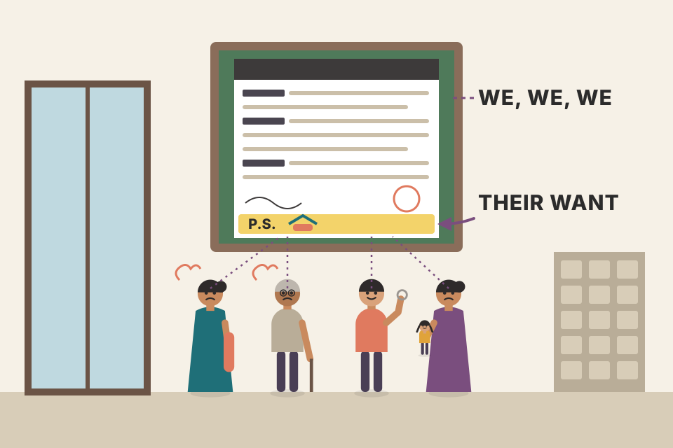
A housing-society notice board in Gurugram: "The Committee desires all residents to comply with the new parking policy. The Committee has worked tirelessly for 12 years. Kindly submit vehicle details promptly. P.S. Residents who register will get a guaranteed covered spot." Every resident's eye goes straight to the P.S., and half of them are annoyed by everything above it.
Where it breaks: the society can still fine people who ignore the notice; the radio station could simply bin the letter. Self-centred messages from someone with power still get grudging compliance. Carnegie's point is about what wins willing cooperation, not what forces it.
What's happening behind it
From the book: the reader of any message is preoccupied with their own worries. A message that leads with the sender's wants makes them feel small and asked-of; the one item that serves them gets noticed last, if at all. Carnegie's bracket comments are a technique in themselves: reread your own message as the most distracted, most self-absorbed version of the recipient.
Beyond the book: writing guides now teach the same thing as "bottom line up front" and "lead with the reader's benefit". The agency letter is a textbook case of the "curse of knowledge": the writer knew why the request mattered to him and forgot the reader did not.
At work
Every all-hands email from a platform team, every "please update your JIRA tickets" message from a PM, every cold email to a recruiter is an agency letter waiting to happen. The test: cover your name and read the first two lines. Do they say what the reader gets? If the reader's benefit is in your last line, move it to your first.
Interview angle. "How do you get buy-in from other teams?" A good answer: "I start from what they're measured on. When we needed product teams to adopt the new auth library, the announcement led with 'this removes the session bug your support queue keeps seeing', not with our migration deadline."
Making people feel important rather than small: Part Two, Ch.6.
08 · SAME REQUEST, REWRITTEN
The freight terminal's letter: before and after
pdf p58–60
The second letter is a request that was reasonable in substance and still produced the opposite of what it wanted. Carnegie then rewrites it, which makes this the chapter's clearest before-and-after.
freight terminal superintendentA. Zerega's Sons, BrooklynEdward Vermylen, sales manager510 pieces at 4:20 p.m., 10 November
The problem. A large freight terminal was overloaded because too many customers delivered in the late afternoon: congestion, staff overtime, trucks kept waiting, and sometimes delayed freight.
The original letter, in outline. Written to the company of Edward Vermylen, a student of Carnegie's course, it started with the terminal's own difficulties, pointed to a 510-piece shipment that had arrived at 4:20 p.m. on 10 November, asked for earlier or part-morning deliveries, and only in its final paragraph mentioned what the customer would gain (quicker unloading, same-day dispatch).
How it landed. Vermylen sent the letter to Carnegie with his verdict: it had the reverse effect of what was intended. It opened with the terminal's problems, which his company was not interested in; it asked for cooperation without any thought of whether that would inconvenience them; and it saved the one thing they cared about for last. The overall effect was antagonism, not cooperation.
Carnegie's rewrite (he modestly says it may not be the best possible, but is surely better), in outline:
In short: the rewrite thanks the customer for fourteen years of business, describes the late-afternoon jam as something that holds up their trucks and freight, presents morning deliveries as the way to keep their goods moving (with a friendly nod to the pasta the customer makes), promises good service whenever the loads arrive, and tells the busy reader no reply is needed.
Rewrite it
Pick a blunt request, decide how you would rewrite it from the reader's side, then reveal a Carnegie-style version and what changed.
Picture it
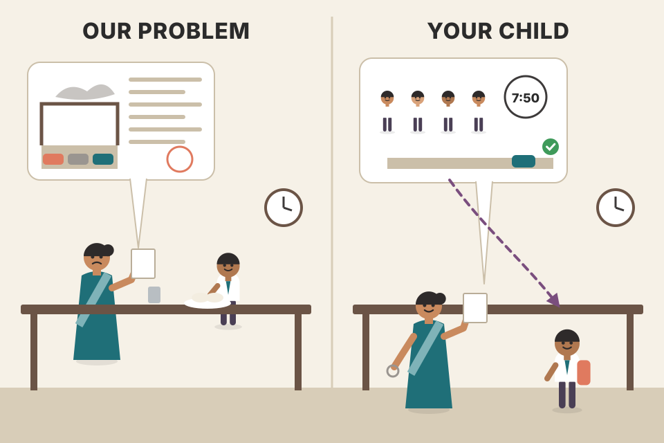
A school sends parents a note: "Due to severe traffic congestion at the gate, the administration requests parents to cooperate by dropping children before 7:50." Compare: "Your child gets the full assembly and a calm start when they arrive by 7:50. After that the gate jams and children wait in the car. Drop before 7:50, and you're out of the lane in two minutes."
Where it breaks: the rewrite is longer and takes more thought, and some readers just want the rule. Leading with their benefit should not bury the actual request; both letters still have to say clearly "come earlier".
What's happening behind it
From Vermylen's verdict: three things caused the antagonism. The reader was asked to care about the sender's problems; the request ignored the reader's own costs; and the benefit was hidden at the end. Carnegie's rewrite fixes all three: it starts with appreciation (Ch.2), describes the problem in terms of the reader's trucks and freight, and removes even the small burden of replying.
At work
The same structure fixes most cross-team requests. Before: "Our service is getting overloaded by your batch job at 9 a.m. This causes alerts and extra on-call work for us. Please move it." After: "Your nightly export has been reliable for two years, thanks. At 9 a.m. it lands at the same moment as three other jobs, so it sometimes queues and your report arrives late. If it ran at 6 a.m., it would finish in half the time and your dashboard would be fresh before stand-up. No need to reply; just let us know if 6 a.m. causes you trouble."
Connects to
Begin with honest appreciation before asking for change: Part Four, Ch.1 and Ch.2.
Barbara Anderson writes to twelve banks; eleven call back
pdf p60
Barbara AndersonNew York bank, 10 yearsmoving to Phoenix for her son's health12 letters → 11 interview invitations
The situation. Barbara Anderson worked at a bank in New York and needed to move to Phoenix, Arizona, because of her son's health. She wrote to twelve Phoenix banks using what she had learned in the course.
What her letter covered, in outline. Four short paragraphs, every one about the bank: her decade of experience as something a growing bank could use; her record at Bankers Trust, up to Branch Manager, across depositor relations, credit, loans and administration; her confidence that she could add to the bank's growth and profit; and a dated next step (she would be in Phoenix the week of 3 April and wanted to show how she could help the bank reach its goals).
What it did not say. Nothing about why she wanted a job, what she hoped for, or her son. Every line is about the bank: its growth, its profit, its goals.
The result. Eleven of the twelve banks invited her to interview, and she was able to choose which offer to accept.
Carnegie's reason: she did not state what she wanted; she wrote about how she could help them, and kept the focus on their wants.
Dated wording. Her letter opens "Dear Sir", which assumes the reader is a man; today you would use the person's name, or "Dear Hiring Team".
Reflect, then reveal: whose letter is it?
Paste or write a real message you are about to send: a cover letter, a LinkedIn note, a request to another team. Nothing is saved or sent anywhere. The counter looks at the words that point at you (I, me, my, we, our) against the words that point at them (you, your).
Picture it
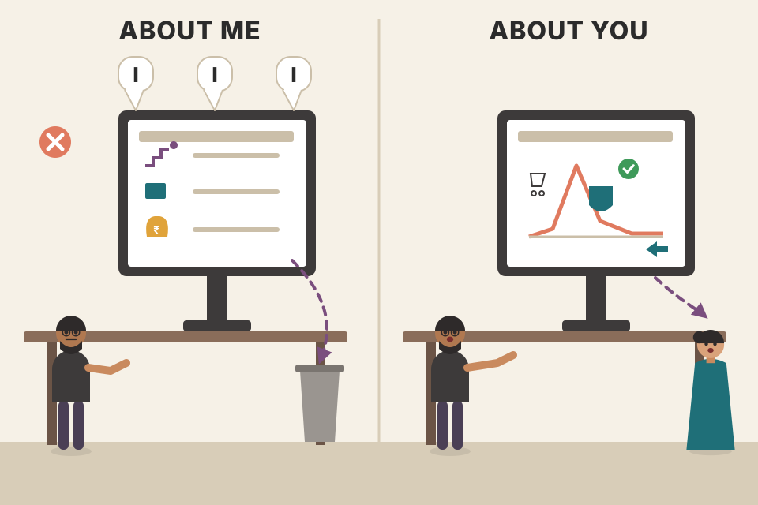
Two candidates email the same Bengaluru startup. One writes: "I am looking for a role where I can grow, learn new technologies and get a better package." The other: "Your checkout service handles festival-sale spikes; I spent two years making ours survive Big Billion Days traffic, and I'd like to show you how." Guess which one the CTO forwards to the hiring manager.
Where it breaks: a letter about them still has to be true about you. If you have never handled the spike, the second email gets you an interview you will fail. Anderson's letter worked because ten years of real experience stood behind every line.
What's happening behind it
From the book: a hiring manager reading a stack of letters is the station manager from plate 7, busy with their own problems (open roles, growth targets). A letter that answers "how does this person solve my problem?" is the only kind that gets read to the end.
At work and in your job search
Rewrite your résumé summary and cover notes the Anderson way: open with the company's problem or goal, then your evidence, then a concrete next step on their calendar ("I'm in Bengaluru the week of the 12th"). The same goes for internal transfers: "I want to move to the ML platform team" is your want; "your team is short on people who know our data pipeline, and I built half of it" is theirs.
Interview angle. "Tell me about yourself" is Anderson's letter spoken aloud. Two sentences on your experience, framed by what this role needs; one on what you'd bring to their current problem.
Connects to
Talking in terms of the other person's interests: Part Two, Ch.5.
10 · SELLING
Nobody wants to be sold: the Forest Hills agent, and Carl vs John
pdf p61–62
Why so many salespeople struggle. Carnegie pictures thousands of salespeople walking the streets tired, discouraged and underpaid, because they think only about what they want. They miss a simple fact: neither you nor I want to buy anything; if we did, we would already have gone out and bought it. What we always want is to solve our problems. Show us how your product or service solves one, and you won't need to sell: we will buy. And customers like to feel they are buying, not being sold to.
Forest Hills, New Yorkan estate agent who knew the area for yearsa 60-second phone call he never made
The question. Carnegie lived for many years in Forest Hills, a neighbourhood of private houses in New York. Rushing to the station one day, he met a local estate agent and quickly asked whether his stucco house was built on metal lath or hollow tile. The agent said he didn't know, and told Carnegie what he already knew: the Forest Hills Garden Association could tell him.
The follow-up. Next morning a letter arrived from the agent. It did not contain the answer, which a one-minute phone call would have found. It repeated that Carnegie could phone and find out, and then asked to handle Carnegie's insurance.
Carnegie's verdict. The man was not interested in helping him, only in helping himself.
J. Howard LucasBirmingham, Alabamatwo agents from one insurer: "Carl" and "John"same new policy, same day
The setup. Lucas was on the management team of a small company. A large insurance company nearby had assigned his firm to two of its agents, whom he calls Carl and John.
Carl. One morning Carl dropped in and mentioned in passing that his company had just introduced a new life-insurance policy for executives; they might be interested later, and he would come back when he had more details.
John. That same day John spotted them on the pavement coming back from a coffee break and called out that he had great news for them. He hurried over and excitedly told them about a new executive life policy his company had launched that very day (the same one Carl had mentioned). He wanted them to have some of the first policies issued, gave them a few key facts, and said someone from head office would come tomorrow to explain it; meanwhile, let's sign the applications so they have something to work with.
The result. John's enthusiasm made them eagerly want the policy before they even had the details. When the details came, they matched what John had said. He sold each of them a policy and later doubled their cover. Lucas's comment: Carl could have had those sales, but made no effort to make them want the policy.
Which response? Same news, three ways to deliver it
Pick a response to see how Carnegie would judge it.
Picture it
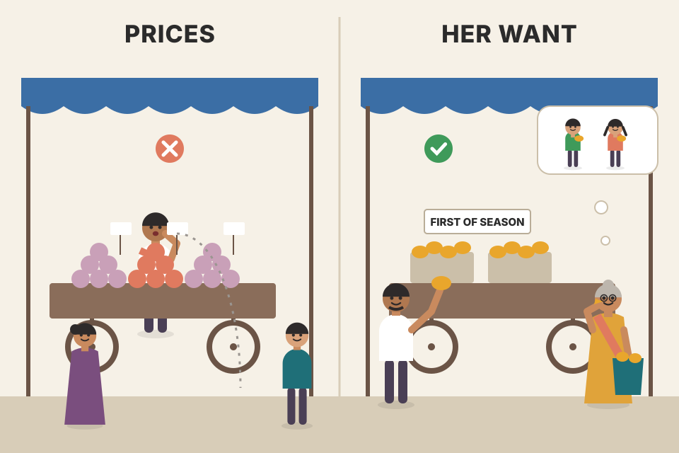
Two sabziwalas at the same Sunday market. One sits behind his pile and calls out prices. The other spots a regular customer, holds up a mango and says, "Aunty, first Alphonso of the season, arrived this morning from Ratnagiri. Your grandchildren were asking last week, no? Taste one." She leaves with two dozen.
Where it breaks: John's enthusiasm only paid off because the details, when they came, matched his pitch. If the mango had been sour, the second seller would have lost a regular for good. Enthusiasm amplifies the truth; it cannot replace it.
What's happening behind it
From the book: the Forest Hills agent had a ready-made chance to solve Carnegie's problem and used it to push his own. Carl passed on news without any reason to care. John did three things: he treated the news as being for them ("great news for you"), made it feel exclusive (some of the first policies), and gave them an easy next step. His enthusiasm was contagious.
Beyond the book: the idea that customers buy outcomes, not products, is now standard in product thinking (Clayton Christensen's "jobs to be done": people "hire" a product to do a job for them). The Forest Hills story is the classic anti-pattern: a salesperson who ignores the job the customer just told him about.
At work
Internal tools need selling too. Carl: posting "FYI, we released v2 of the deploy CLI, docs here" in a channel. John: going to the team that complained about slow rollbacks last sprint, saying "the thing you asked about shipped this morning: rollbacks in one command. Want me to set it up on your service now, before your Thursday release?"
And the Forest Hills lesson for support and on-call: when someone asks you a question you could answer in sixty seconds, answer it. Pointing them to the wiki and then asking for a favour reads exactly like the agent's letter.
Being genuinely interested in other people (the agent was not): Part Two, Ch.1.
11 · THE GUARD-RAIL
This is not manipulation: both sides must gain (and Mike Whidden's Shell station)
pdf p62–63
Little competition. The world is full of grabbing, self-seeking people, Carnegie says, so the rare person who tries unselfishly to serve others has a huge advantage: almost no competition. He backs this with Owen D. Young, a well-known lawyer and business leader, who said in effect that people who can put themselves in others' place and understand how their minds work never need to worry about their future.
The one thing to take from the book. If you get only one thing from the whole book, Carnegie says, let it be a stronger habit of always thinking in terms of the other person's point of view and seeing things from their angle. That alone may become one of the building blocks of your career.
The guard-rail. Then comes the chapter's most important caveat. Seeing the other person's view and arousing an eager want does not mean manipulating someone into something that benefits you and harms them. Each party should gain. He points back at the chapter's own stories:
Story
What the persuader got
What the other side got
Freight letter (plate 8)
Earlier deliveries, less congestion
Trucks unloaded faster, freight shipped the same day
Barbara Anderson (plate 9)
A suitable job in Phoenix
A valuable, experienced employee
John's insurance (plate 10)
Several sales, then doubled cover
A policy they wanted, as described
Mike Whidden (below)
The No. 1 spot in his district
A cleaner station and rising sales
Michael E. WhiddenWarwick, Rhode Islandterritory salesman, Shell Oilone run-down service station
The situation. Mike wanted to be the top salesperson in his district, but one service station was holding him back. It was run by an older man who could not be persuaded to clean it up, and it was in such poor shape that its sales were dropping sharply.
What failed. Pleas, many lectures, heart-to-heart talks. None of it had any effect.
The move. Mike stopped talking and invited the manager to visit the newest Shell station in his territory.
The result. The manager was so impressed by the new station's facilities that by Mike's next visit his own station was cleaned up and its sales had risen. That lifted Mike to No. 1 in his district. Carnegie's summary: all the talk had done nothing; showing the modern station aroused an eager want, and both men benefited.
Picture it
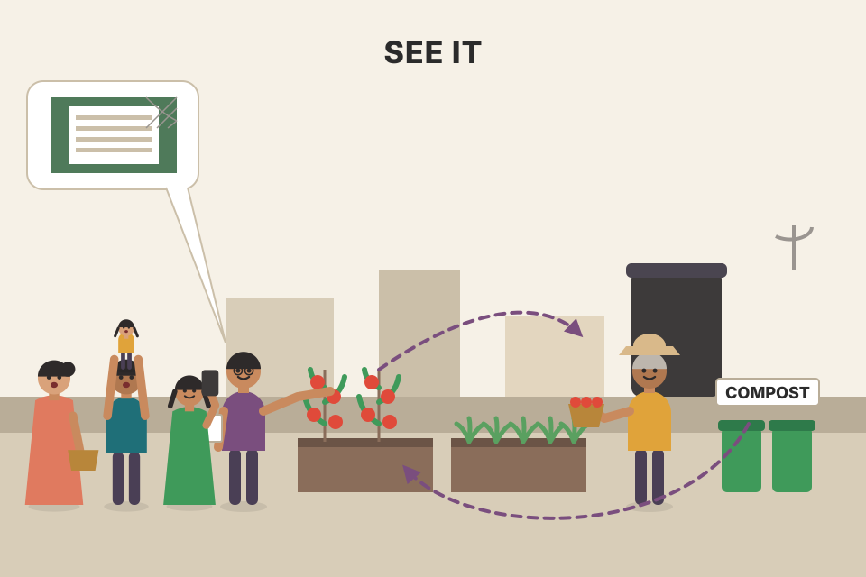
A housing-society secretary wants residents to start composting. Notices and WhatsApp lectures do nothing. So he takes three families on a Saturday visit to a neighbouring society whose terrace garden, grown on its own compost, now gives everyone free tomatoes and coriander. Within a month his own society has compost bins.
Where it breaks: a visit shows what is possible, but the manager in Mike's story also had to want better sales already. If someone truly does not care about the outcome (a station owner about to retire and sell), showing them the shiny version changes nothing. You can only arouse a want that has somewhere to grow.
What's happening behind it
From the book: the test of the principle is that both sides gain; if only you gain, it is not what Carnegie means. And seeing is stronger than hearing: the station manager could ignore words, but not the evidence of a better station under his own eyes.
Beyond the book: the line between persuasion and manipulation is usually drawn this way: persuasion gives the other person true information and leaves them free to decide in their own interest; manipulation hides something, exploits a weakness, or works against their interest. A useful self-check: would the plan still work if they knew exactly what you were doing and why? Carnegie's hotel sheet passes; the fake five dollars, if done in earnest, does not.
At work
Mike's lectures are the "please write more tests" Slack messages. Mike's station visit is pairing a sceptical team with a team that already ships behind a good test suite and deploys on Fridays without fear. Let them see it working.
The both-gain test is also how to spot when you are crossing the line. "Make the junior want to take on the boring migration" is fine if it truly builds their skills and visibility; it is manipulation if you are just dumping work and dressing it up.
Interview angle. "How do you influence without authority?" A strong answer names the other team's goal, shows how your proposal served it, and makes clear both sides came out ahead. Interviewers listen for whether "influence" in your story means win-win or getting your way.
Sincerity, the line between appreciation and flattery: Ch.2. Making people glad to do what you suggest: Part Four, Ch.9.
12 · A PITCH THAT MISSED
The Carrier trainee who wanted people to play basketball
pdf p63–64
Educated, but not about people. Most people, Carnegie says, go through college reading Virgil and mastering calculus without ever learning how their own minds work.
Carrier Corporation (air-conditioners)Effective Speaking coursenew college graduatesone black eye
The pitch. Carnegie once taught public speaking to young graduates joining Carrier. One of them tried to get the others to play basketball after work, and every point he made was about himself: he liked the game, the gym had been too empty for a match lately, he had picked up a black eye while a few of them threw the ball around, and he wanted to play.
Carnegie's questions to the reader. Did he mention anything you want? You don't want to go to a gym nobody goes to. You don't care what he wants. You certainly don't want a black eye.
What he could have said. How the gym gets you what you want: more energy, a better appetite, a clearer head, fun, games, basketball.
Carnegie then repeats Overstreet's line for the second time: first arouse in the other person an eager want.
Rebuild the pitch
Tick the lines you would keep in a pitch to get colleagues to the Thursday game. Then check your pitch.
Picture it
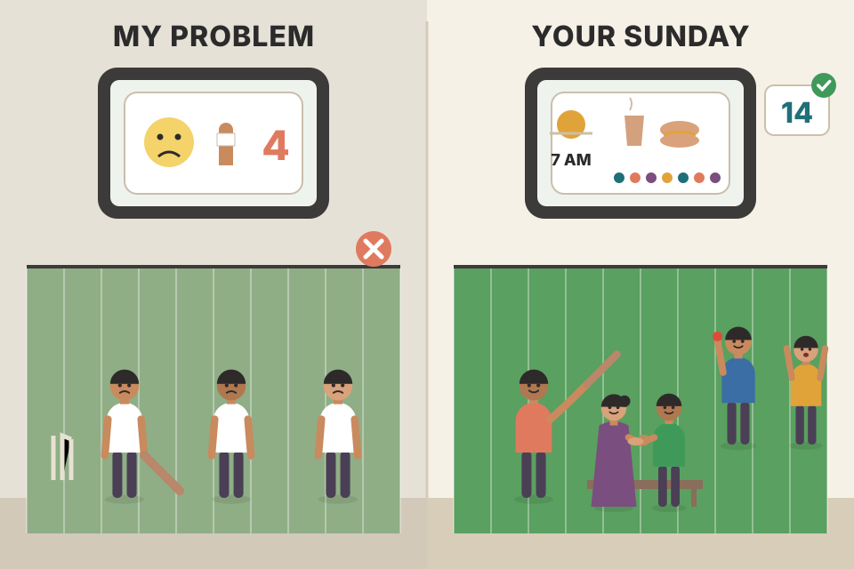
A colleague posts in the office group: "Guys please come for Sunday cricket, I really want to play, last week only four of us came and I got hit on the finger." Nobody comes. The next week someone else posts: "Sunday 7 a.m., box cricket at the turf near the metro, chai and vada pav after, beginners welcome, we'll have full teams." Fourteen people sign up.
Where it breaks: some honesty about the downsides helps (people like to know if the game is casual or competitive). The problem with the first pitch is not that it was honest; it is that every line was about the speaker.
What's happening behind it
From the book: the trainee's every sentence answered "why do I want this?", and two of them (empty gym, black eye) were actually reasons not to come. A pitch built from the listener's side starts from what they already want (energy, fun, a proper game) and shows the gym as the way to get it.
At work
Recruiting people to your guild, your on-call rotation, your hackathon team or your open-source side project is the basketball pitch. "We need more people in the reliability guild, attendance has been low" is the black eye. "Each session we take one real incident from the last month and walk through how to debug it; it's the fastest way to learn the systems you'll be paged for" is the clearer head and the proper game.
Connects to
Talking in terms of the other person's interests: Part Two, Ch.5.
13 · TWO PROBLEMS, ONE BOY
The bully on the tricycle, and the bed the boy bought himself
pdf p64–65
A student of Carnegie's course had a small son in Brooklyn and two problems to solve. Both times, nagging failed, and both times the father asked a better question.
a three-year-old boyunderweight, wouldn't eata bigger boy down the streeta much-loved tricycle
Problem one: he would not eat. The boy was underweight and refused proper meals. The parents did the usual thing: scolded and nagged, telling him what Mother wanted him to eat and how Father wanted him to grow up big. Carnegie says the boy paid about as much attention as you pay to one grain of sand on a beach.
The realisation. No one with sense would expect a three-year-old to respond to the viewpoint of a thirty-year-old, yet that is exactly what the father had expected. He saw it was absurd and asked: what does the boy want, and how can I tie what I want to what he wants?
The want. The boy loved riding his tricycle on the pavement in front of the house. A few doors down lived a bigger boy who would pull him off and ride it himself. The little one would run screaming to his mother, who came out and put things right, almost every day. What he wanted needed no detective: his pride, his anger and his wish to feel important all pushed him toward getting even.
The move and the result. His father explained that if he ate what his mother gave him, he would one day be big enough to beat the bigger boy. From then on there was no feeding problem; the boy would eat spinach, sauerkraut, salt mackerel, anything that would make him big enough.
slept in Grandmother's bedhe blamed Grandmotherpyjamas like Daddya bed of his own
Problem two: bedwetting. The boy slept with his grandmother, and kept wetting the bed. Each morning she would point it out and he would deny it and blame her. Scolding, spanking, shaming and repeating that the parents didn't want it: nothing worked. So the parents asked: how can we make him want to stop?
His wants. First, he wanted to wear pyjamas like his father instead of a nightgown like his grandmother. Grandmother, tired of the nightly trouble, gladly offered to buy him pyjamas if he stopped. Second, he wanted a bed of his own, and she did not object.
The shopping trip. His mother took him to a Brooklyn department store, winked at the sales assistant and introduced "a little gentleman who would like to do some shopping". The assistant made him feel important by asking what she could show him. He stood a bit taller and said he wanted to buy a bed for himself. When he was shown the one his mother had chosen, she winked again and he was steered into "buying" it.
The result. The bed came the next day. That evening the boy ran to the door shouting for his father to come and see the bed he had bought. His father did what Charles Schwab advised (Ch.2): he was hearty in his approval and lavish in his praise. When his father asked whether he would wet this bed, the boy promised he would not. And he kept his word, because his pride was involved: it was his bed, he alone had bought it, and he wore pyjamas like a little man and wanted to act like one.
Dated, and worth adapting. Promising a toddler he will be able to beat up the bully is a 1930s solution most parents today would not use, and "act like a man" ties pride to gender. The principle survives the update: the boy wanted to feel strong and grown-up. Modern equivalents: "food that makes you strong enough to ride the big-kids' bike", or dealing with the bully directly and linking food to sport. The "salesgirl" is today's sales assistant.
Picture it
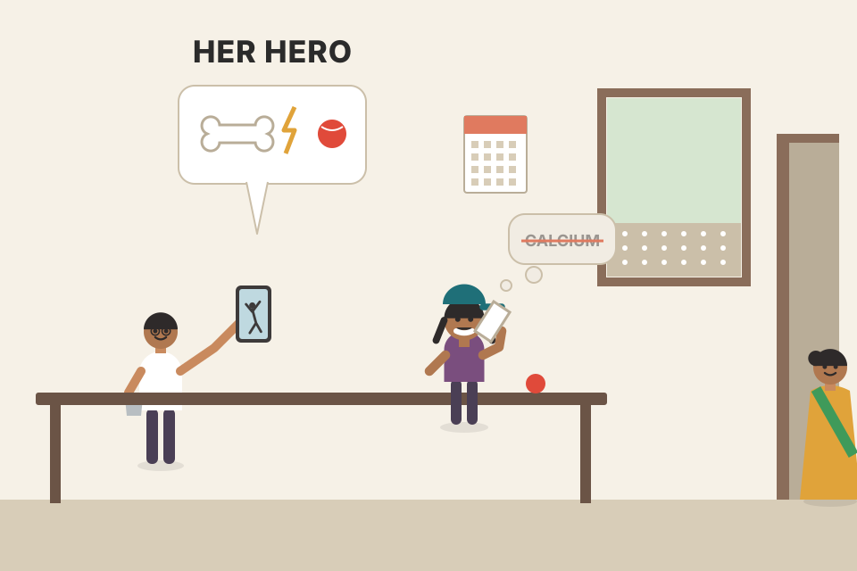
A seven-year-old in Chennai will not drink milk. Lectures about calcium fail. Then her cricket-mad father points out that the batter she idolises drank milk every day as a child, and that bowlers need strong bones to bowl fast. Next morning the glass is empty before he has finished his filter coffee.
Where it breaks: the boy's wants were found by watching what he cared about (the tricycle, Daddy's pyjamas). If you just invent a want for someone ("you'll love this!"), it does not work. And with adults, steering a choice with winks behind their back, as the mother did, would rightly feel like manipulation.
What's happening behind it
From the book: two of the strongest wants are the wish to feel important (Ch.2) and pride. The first problem tied eating to his pride and his wish to stand up for himself; the second tied a dry bed to his pride of ownership (his bed, he bought it) and to feeling grown-up. Once a promise is tied to pride, people keep it for themselves, not for you.
Beyond the book: the bed story also shows commitment and consistency: after saying out loud "I won't wet this bed" about a bed he had chosen, the boy wanted to act in line with his own words. Researchers find that choices people feel they made themselves are much "stickier" than choices imposed on them (the IKEA effect is a cousin: we value what we helped build).
At work
The father's insight, "a three-year-old cannot see a thirty-year-old's viewpoint", is the senior-junior gap. Telling a new engineer "the company wants clean code" is the parents' "Mother wants you to eat this" nagging. Find what they want: to stop being the person whose PRs bounce, to be trusted with the payments service, to get promoted. "Clean, tested PRs are the fastest way onto the payments rotation" ties your want to theirs.
The bed works too: let people pick and own their tools and their part of the design. An engineer who chose the observability stack defends its dashboards; one who was assigned it lets them rot.
Connects to
Schwab's "hearty in approbation and lavish in praise": Ch.2 and Part Four, Ch.6.
Give a person a fine reputation to live up to ("you won't wet this bed"): Part Four, Ch.7.
14 · LET THEM STIR IT
The cereal she made herself, and Principle 3
pdf p65–66
K. T. Dutschmanntelephone engineer, course studentthree-year-old daughtertwo helpings
The situation. Dutschmann could not get his three-year-old daughter to eat her breakfast cereal. Scolding, pleading and coaxing had all failed. So the parents asked themselves: how can we make her want to?
The want. She loved copying her mother and feeling big and grown-up.
The move. One morning they stood her on a chair and let her make the cereal. At just the right moment her father wandered into the kitchen as she stirred, and she called out proudly that she was making the cereal this morning.
The result. She ate two helpings with no coaxing at all, because she was interested in it. She had gained a feeling of importance, and found in making the cereal a way to express herself.
From breakfast to business. Carnegie quotes the critic William Winter: self-expression is the dominant necessity of human nature. Then he makes the chapter's last and most useful move: when you have a brilliant idea, instead of making sure everyone knows it is yours, why not let others cook and stir it themselves? Then they will see it as their own, like it, and perhaps "eat a couple of helpings".
"Self-expression is the dominant necessity of human nature."William Winter, quoted by Carnegie (pdf p66)
He ends with Overstreet's line for the third time, and the principle:
Principle 3
Arouse in the other person an eager want.
The method, collected from the chapter's stories. Carnegie does not list steps; this list is ours, built from his examples.
Pause before you ask: "How can I make this person want to do it?" (Novak, plate 5).
Find their real want by looking at what they already care about: the tricycle, Daddy's pyjamas, feeling grown-up, profit, fast trucks, a job that solves their problem.
Tie your request to it, honestly, in their terms (the hotel sheet, the freight rewrite).
Show, don't just tell: finger paints, the new Shell station, the department store.
Let them own it: they stir the cereal, they buy the bed, they reach the decision on the sheet.
Check both sides gain (plate 11). If only you gain, stop.
Self-audit: this week, when I asked for something, did I…
Picture it
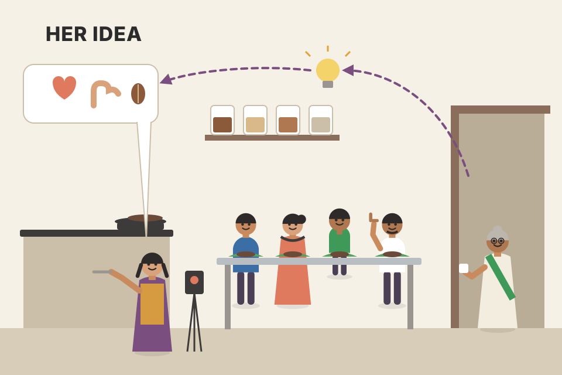
In a joint family the grandmother wants the household to switch to millets. Announcing it at dinner gets groans. Instead, she asks her teenage granddaughter, who follows food creators online, to "help her find" a good ragi dosa recipe and make it for everyone on Sunday. The granddaughter cooks, posts it, and spends the week telling the cousins about the health benefits. The switch is now her idea.
Where it breaks: letting someone "discover" your idea can turn into a quiet trick if you then take the credit back, or if they find out it was staged. It works best when you genuinely let them shape it: maybe the granddaughter's version is better than the one you had in mind.
What's happening behind it
From the book: the girl wanted to feel important and to express herself. Making the cereal gave her both, so eating it became a pleasure instead of an order. Ideas work the same way: a person who helped make an idea feels important and expressed in it, so they want it to succeed.
Beyond the book: this is the IKEA effect (Norton, Mochon and Ariely, 2012: people value things more when they built them) applied to ideas, and the reason "not invented here" resistance melts when people help design the solution. Self-determination theory adds that autonomy (choosing for yourself) is one of three core needs, alongside competence and relatedness.
At work
You want the team to adopt event sourcing for the order service. Presenting a finished design doc ("here is my proposal") invites the team to find holes in your idea. The Dutschmann move: open a design session with the problem ("we keep losing the history of order changes, and support can't answer 'what happened?'"), ask how they would solve it, and guide lightly. When someone proposes keeping every change as an event, build on it. The doc that comes out is the team's, and they defend it in review.
Interview angle. "Tell me about a time you got a team to adopt your idea." Strong answers show you let others shape it and credit them; weak answers make you the lone genius. Interviewers for lead roles listen for this.
Worked example: the same idea, presented two ways
My idea
"I've decided we're moving to feature flags for all releases. Here's my doc. Please read by Friday."
The team reviews it like a stranger's code: hunting for flaws.
Their idea
"Two rollbacks this month each took an hour. What would let us turn a bad change off in seconds? … Priya, flags per feature, like you said: want to sketch how that would look for checkout?"
Priya writes the doc; the team adopts it; you still get flags.
How the three fit together (our reading). They are one sequence, not three separate tips:
Which principle? Part One review
Pick the principle that fits best.
Picture it
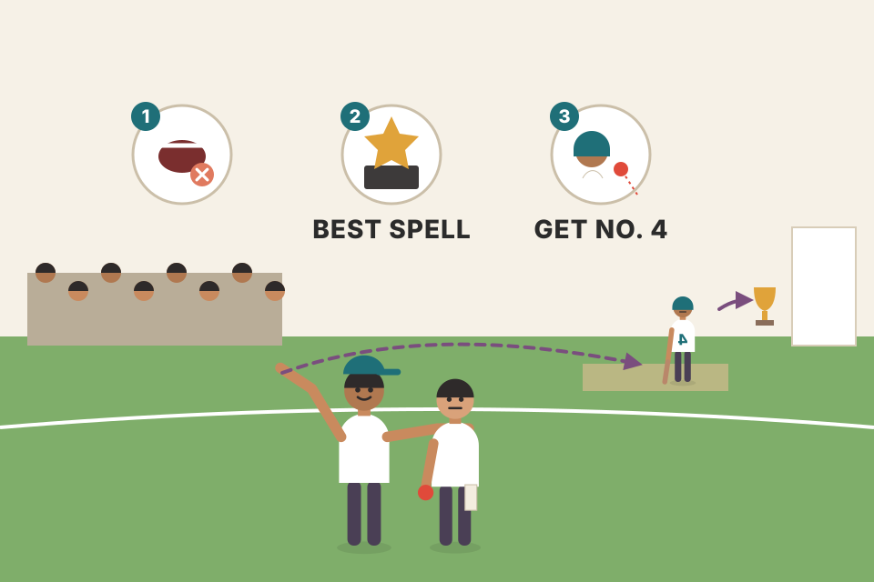
A good cricket captain with a struggling bowler. He does not shout at him in front of the crowd (Principle 1). Between overs he tells him, truthfully, that his first spell was the best of the match (Principle 2). Then he says, "Their No. 4 can't handle your short ball; get him and we're through to the final", tying the team's need to the bowler's own wish to be the match-winner (Principle 3).
Where it breaks: in a match all three happen in a minute. With real colleagues, the trust that Principles 1 and 2 build takes weeks; you cannot skip to Principle 3 with someone you have been criticising all month.
Bait the hook to suit the fish. You like strawberries and cream; fish like worms. Everyone is interested in what they want, nobody in what you want, so the only way to influence people is to talk about what they want and show them how to get it (Lloyd George; the smoking-and-sport example).
Pushing makes people dig in. Emerson pushed and his son pulled; the calf refused. The housemaid offered her finger to suck and led it in.
Every act springs from a want, even a Red Cross donation. Overstreet: first, arouse in the other person an eager want; whoever can do this has the whole world with them, whoever cannot walks alone.
Small proofs. Andrew Carnegie won a $100 bet with a five-dollar postscript (and no money). Stan Novak made kindergarten the door to finger painting; Tim was waiting in the chair at dawn.
The habit: before you speak, ask "How can I make this person want to do it?"
In business. Carnegie cut a 300% rent rise to 50% by listing the hotel's own advantages and disadvantages, never mentioning his own wants. Ford: see things from the other person's angle as well as your own; 90% of people ignore this 90% of the time. The agency letter led with its own desires and buried the useful bit in a P.S. The freight letter put its benefit last and caused antagonism; the rewrite began with fourteen years of custom and framed the change as the customer's gain. Barbara Anderson wrote only about the banks' goals and got 11 interviews from 12 letters.
Selling. People don't want to buy; they want to solve problems, and like to feel they are buying, not being sold. The Forest Hills agent ignored Carnegie's question and asked for his business; John's enthusiasm sold policies (and later doubled cover) that Carl only mentioned.
Not manipulation. Both sides must gain. The unselfish person has little competition (Owen D. Young). Mike Whidden's lectures failed; one visit to a new Shell station worked, and both men gained. If you take one thing from the book: think from the other person's point of view.
At home. The basketball pitch was all "I want". The underweight boy ate to grow big enough to stand up to the bully; the bedwetter stayed dry in the bed he "bought" himself. Dutschmann's daughter ate two helpings of cereal she made.
Let them stir the idea. Self-expression is a dominant need (William Winter), so let people help make your idea and it becomes theirs.
Principle 3: Arouse in the other person an eager want. Part One in a nutshell: don't criticize, condemn or complain; give honest and sincere appreciation; arouse in the other person an eager want.
Term or phrase
Meaning on this page
Where
Principle 3
Arouse in the other person an eager want.
pdf p66
Bait the hook to suit the fish
Offer what the other person wants, not what you like (Lloyd George).
pdf p51
Eager want
A real desire in the other person that makes them act willingly, unwatched (Overstreet).
pdf p52
"The whole world with him… a lonely way"
Overstreet's line that gives the chapter its title; repeated three times.
pdf p52, 64, 66
The pause question
"How can I make this person want to do it?" asked before you speak.
pdf p53
Advantages / disadvantages sheet
Laying out a decision entirely in the other side's interests (the hotel ballroom).
pdf p54–55
Ford's secret
See things from the other person's angle as well as your own.
pdf p55
Buying, not being sold
People buy to solve their problems and resist being pushed.
pdf p61
Each party should gain
The line between arousing a want and manipulation.
pdf p62–63
Tie what I want to what they want
The father's question in the tricycle story.
pdf p64
Let them cook and stir the idea
Let people help make your idea so they own it (self-expression, William Winter).
pdf p66
In a Nutshell (Part One)
Principles 1–3: don't criticize; appreciate; arouse an eager want.
pdf p66
17 · USE IT
Practice this week
beyond the book
Small exercises, each with a way to tell whether it worked. The exercises are ours; the ideas are the chapter's.
The pause question, three times a day. Before any request (a review, a favour, a chore at home), stop and write one line answering "how can I make them want to do this?". Worked if: at least one request gets a faster or warmer yes than usual.
Flip one message. Take a message you are about to send and move the reader's benefit from the last line to the first (the freight-letter fix). Worked if: the reply comes sooner, or without the usual "why do we need this?".
The I/you count. Run your next cover note, LinkedIn message or cross-team request through the counter in plate 9. Rewrite until "you/your" is at least level with "I/we". Worked if: your reply rate goes up over a few weeks (keep a tally).
Draw the sheet. For one negotiation (a deadline, a scope cut, rent, a vendor price), write the other side's advantages and disadvantages before you meet, honestly, including their gains. Worked if: the conversation is about their interests, and you never have to argue.
Show, don't plead. Replace one round of persuading with a demonstration: a five-minute demo, a visit to a team that does it well, a before/after dashboard. Worked if: the other person asks you how to start.
Let someone stir. Bring a problem, not a solution, to one meeting, and let a colleague propose the idea you had in mind (or a better one). Credit them. Worked if: they push the idea forward without you chasing them.
18 · LIMITS
Where it can go wrong
pdf p51–66 · plus beyond the book
The book's own caveats first.
Not manipulation. Carnegie says plainly that arousing a want must not mean getting someone to do something that benefits you and harms them; each party should gain (pdf p62–63).
See their angle "as well as your own". Ford's line does not ask you to give up your own goal. Carnegie still got his ballroom; the terminal still got morning deliveries.
The true facts do the work. The hotel sheet, Anderson's experience and John's policy all worked because the claims were true and the details later matched. The principle frames reality; it does not replace it.
Words alone often fail. Mike Whidden's pleas and the parents' scolding did nothing; seeing (the new station) or doing (making the cereal) did. Carnegie's examples keep moving from talk to action.
Beyond the book: our critique
Some of the stories lean on tricks. The undelivered five dollars is a deception (harmless as a family joke, toxic as a habit). The mother winking at the sales assistant to steer her son's "choice" works on a toddler and would be manipulation with an adult. Take the insight, not the trick.
"Everyone acts only from self-interest" is too strong. People also act from duty, loyalty and plain care for others. If you treat every colleague as a bundle of wants to be baited, they will feel handled. Ask what they want; don't assume it is always money or status.
You can guess the want wrong. The father knew his son's tricycle; Stan knew Tim. Outside your family you often do not know. Asking ("what would make this worth your time?") beats guessing, and guessing wrong ("you'll love the visibility!") reads as spin.
Some things are not optional. Security fixes, legal deadlines, incident response: you can still explain why they serve the other person, but you should not pretend there is a choice when there is not. Dressing a mandate up as a "want" feels dishonest.
Dated examples. The bully story promises a child he can beat someone up; "act like a man" ties pride to gender; the housemaid and "salesgirl" reflect the 1930s. The principle survives; the examples need updating (as done on this page).
Culture shapes what people want. In many Indian teams, wants such as family approval, stability and respect from seniors may matter more than individual glory. In collectivist settings, framing the gain for the team can work better than framing it for the individual. The principle is the same; the want you find may differ.
The evidence is anecdote. These are success stories collected from course students, so failures are missing. Later research (negotiation, motivation, persuasion) does support the core idea of appealing to the other person's interests, but the stories are illustrations, not proof.
19 · TEST YOURSELF
Check yourself
pdf p51–66
Try to answer before opening each one. The first half is story recall; the second half is using the principle.
1. What does the fishing story say, and how did Lloyd George use it?
Carnegie likes strawberries and cream but baits his hook with worms, because that is what fish want. Lloyd George, asked how he outlasted the other First World War leaders (Wilson, Orlando, Clemenceau), credited learning to bait the hook to suit the fish.
2. How did the housemaid get Emerson's calf into the barn?
Emerson pushed and his son pulled, so the calf stiffened its legs and refused. She thought of what the calf wanted, let it suck her finger, and gently led it into the barn.
3. Why does Carnegie say even a Red Cross donation fits his rule?
You gave because you wanted something: the feeling of doing a fine, unselfish act (or to avoid embarrassment, or to please a customer). If you hadn't wanted that more than the money, you wouldn't have given.
4. How did Andrew Carnegie win his $100 bet?
His nephews at Yale ignored their mother's letters. He wrote them a chatty letter mentioning in a postscript that he was sending each five dollars, and didn't enclose it. Both replied by return post, thanking him and noting the missing money.
5. What did Stan Novak do instead of sending Tim to his room?
He asked why Tim would be excited about kindergarten, listed the fun things with his wife, and the family finger painted at the kitchen table. When Tim wanted to join, they said he had to learn at kindergarten first. Tim was waiting in the living-room chair at dawn.
6. What was on Carnegie's advantages/disadvantages sheet, and what was the result?
Advantage to the hotel: the ballroom freed for more profitable dances and conventions. Disadvantages: Carnegie's rent would fall to zero because he would move, and the hotel would lose crowds of cultured visitors worth more than $5,000 of advertising. The increase dropped from 300% to 50%, and he never said what he wanted.
7. What was wrong with the freight terminal's original letter, according to Vermylen?
It began with the terminal's problems, which the customer didn't care about; it asked for cooperation without considering the customer's inconvenience; and it mentioned the customer's benefit only in the last paragraph. The effect was antagonism, not cooperation.
8. Why did eleven of twelve banks invite Barbara Anderson to interview?
Her letter said nothing about what she wanted; it described how her ten years of experience could help each bank grow, profit and meet its goals, and offered a specific week to meet.
9. What did John do that Carl didn't?
Carl mentioned the new executive policy casually and promised to come back later. John, the same day, excitedly called it great news for them, offered them some of the first policies, arranged a head-office explanation, and got applications signed. His enthusiasm aroused an eager want; he sold each a policy and later doubled their cover.
10. How did the parents of the Brooklyn boy solve the eating and bedwetting problems?
Eating: they linked food to his wish to grow big enough to beat the bigger boy who kept taking his tricycle. Bedwetting: he got pyjamas like his father and "bought" his own bed in a department store; his father praised it, the boy promised not to wet it, and pride kept him to his word.
11. Application: you need another team to review your design doc this week, and they are busy. Write the first sentence of your request the Carnegie way.
Lead with their want, for example: "This design removes the shared database table your team keeps getting paged for; a 20-minute review would let us make sure it fixes your case too." Avoid opening with your deadline.
12. Application: is it manipulation to make a junior "want" to take a dull migration task?
Use Carnegie's test: do both sides gain? If the task truly builds skills and visibility they want, and you say so honestly, it is fine. If you are just offloading work with a nice story, it is manipulation, and they will notice.
13. Application: how would you use the "cook and stir" idea to get the team to adopt a new testing standard?
Bring the problem (flaky releases, slow rollbacks) to the team and ask how they would fix it. Let someone propose the standard, build on it, and credit them. They will treat it as their own and enforce it themselves.
14. Interview: "Tell me about a time you influenced someone without authority." How does this chapter shape a good answer?
Start with what the other person or team wanted (their goals, metrics, pain), show how you tied your proposal to it, mention a demonstration if you used one, and end with both sides gaining. Don't make the story about winning an argument.
15. What are the three principles of Part One, and how do they fit together?
1: Don't criticize, condemn or complain. 2: Give honest and sincere appreciation. 3: Arouse in the other person an eager want. Stop hurting people's pride, feed their need to feel important honestly, then connect what you need to what they want.
20 · SOURCES
References
pdf p51–66
Book pages and other sources used on this page
Dale Carnegie, How to Win Friends and Influence People, revised edition (1981; Simon & Schuster 2009 printing), Part One, Chapter 3, "He Who Can Do This Has the Whole World with Him. He Who Cannot Walks a Lonely Way", pdf p51–66, plus the Part One "In a Nutshell" list (pdf p66). Stories by page: fishing, Lloyd George, smoking p51; Emerson's calf p51–52; Red Cross, Overstreet, Andrew Carnegie p52–53; Stan Novak p53; hotel ballroom p54–55; Henry Ford p55; agency letter p55–58; freight letter and Vermylen p58–60; Barbara Anderson p60; salespeople and Forest Hills p61; Carl and John (J. Howard Lucas) p61–62; Owen D. Young and "each party should gain" p62–63; Michael Whidden p63; Carrier basketball p63–64; the Brooklyn boy p64–65; K. T. Dutschmann and William Winter p65–66; Principle 3 and In a Nutshell p66.
Harry A. Overstreet, Influencing Human Behavior (1925), quoted in the chapter.
Beyond the book (named where used): J. Brehm, A Theory of Psychological Reactance (1966); R. Cialdini, Influence (social proof, scarcity, commitment and consistency); R. Fisher and W. Ury, Getting to Yes (1981; interests vs positions, BATNA); C. D. Batson on empathy and altruism; M. Norton, D. Mochon, D. Ariely, "The IKEA effect" (2012); E. Deci and R. Ryan, self-determination theory; C. Christensen, "jobs to be done"; the "curse of knowledge" and "bottom line up front" in writing guides.
Biographical note (Beyond the book): Dale Carnegie's change of surname spelling from Carnagey.